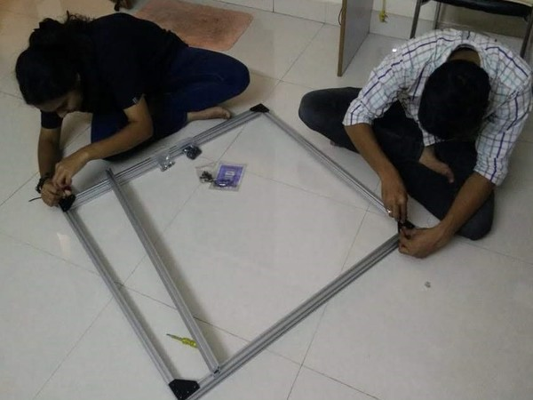
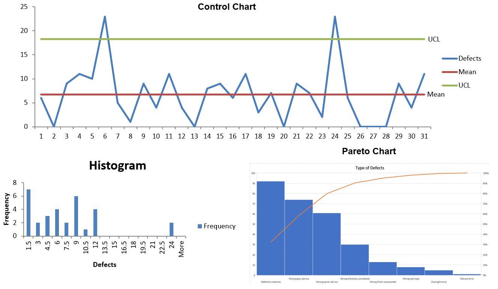

In life we may often become entranced with certain fascinations that seem as if they will never fade, notwithstanding all challenges and difficulties that we may experience. This is what engineering represents for me — a passion that I feel grows stronger in me with each passing day. It is precisely for this reason that I considered pursuing master’s Program in Mechanical Engineering at Northeastern University. In my prior role at AXISCADES Engineering Technologies Ltd., Bangalore, India, first as an Interior aircraft flammability certification support for CRJ700/900/1000 and then as an Electrical Wiring Interconnect System (EWIS) designer for Bombardier Global 7500/8500 series where I gained profound knowledge in aircraft interior components flammability testing and creation of electrical wiring harness diagrams using Mentor Graphics tool (CHS) for clients like Bombardier, a renowned multinational aerospace and transportation company. In addition to the above, I have also mentored a group of members in my team which included the responsibility of finalizing hardware circuit design by performing quality checks, conducting tool training and providing necessary support throughout the designing and integration team. As a graduate student studying Mechanical engineering,I believe my combination of academic work and prior experience will allow me to greatly contribute to accelerate the world's transition. I would like to get involved in a team that works for sustainability and betterment of society and would like to enhance my career by getting involved in projects that provides the best solutions to the issues that the environment is facing.
Education
Northeastern University,Boston,MA MS in Mechanical Engineering GPA: 3.4
Hindustan University, India B.Tech in Aeronautical Engineering GPA: 3.8
Work Experience
Axiscades Engineering Technologies Limited 1. Involved in design, Integration and develoment of 120+ electrical wiring harness using Mentor Graphics, a 2D design tool. 2. Implemented design changes in ECN of wiring diagram.
Master Diploma in Automotive Design CSWA CSWP LAI Lean Academy.

Projects
1. Structural Investigation on the scaled model of advanced launch vehicle Indian Space Research Organization, Sriharikota, India
Objective of the Project:
To design scale model test stand component, which is undertaken for studying the new vehicle configuration using scaled model tests with a primary objective of qualifying it from the existing launch pad. In the present research work, design of 1:12.8 scale model advanced launch vehicle with test stand is performed both analytically and numerically. Subsequently, after realization of the model, dynamic characterization and stress analysis were performed on the scaled model test facility as a whole. Design of the model has been performed with finite element analysis and the results are compared with that of the actual load test results. Finally, during the scale model hot flow test with advanced launch vehicle configuration, vibrations are measured along the vehicle and the dynamic stress analysis has been performed and compared with theoretical and FEM cases. Hence, the design of the scale model test stand (1:12.8) has been validated and is presented in the present project work.
Research Conclusion:
• Modeling of the scaled down components is done using design modeler, ANSYS Workbench.
• Experimental load testing has been performed using hydraulic jacks and the strain results are obtained from strain gauges bonded on the critical locations near brackets. Similar conditions are performed using Finite Element Analysis. Thus the structure was found to be safe for the operation.
• Computed stress distribution and peak value of power spectral density generated by random loading, further verified with FEA. Modal analysis to analyze the mode shapes of the scaled launch vehicle has been performed using ANSYS and experimental method. The results are found to be in good agreement. The deviations are due to structural damping of the structure and the inability in modeling the exact boundary conditions in finite element analysis.
• Simulated modal analysis using data acquisition to interpret the graphical representation of various mode shapes were performed using MATLAB program to determine natural frequency and modal damping.
2.Improving quality process in flammability testing with lean concepts Northeastern University, Boston, Massachusetts
Lean management system is a procedure followed to manage an organization to work
systematically in order to achieve incremental changes in processes to improve efficiency and
quality. Flammability testing is a critical part of ensuring safe and trustworthy consumer products.
Industry applications for flammability test methods include textiles and consumer goods, aerospace
and transportation. Consumer products must satisfy safety requirements and regulations before
brought to market with proper certification from the required authorities, which includes the rate
of burning, heat and smoke release criteria.
Project Conclusion:
Cycle time reduction:
• Improved plant layout as per Value stream mapping and implemented process automation to reduce the overall process time was reduced by 10% (Best case without rework)
and 14.2% (Worst case with rework).
• The failure rate during quality check was reduced to 5%, further reduced rework and followed 5S ideologies in file management. 
3. CAD Modelling on One-wheel Skateboard Northeastern University, Boston, Massachusetts
Functionality and design requirements:
One-wheel centered, and balanced skateboard is a device which can be used by human beings to transport form one place to another.Safety grips have been provided along with the frame to ensure that the passenger is safe while riding one-wheel skateboard since the safety is the priority to be considered in any product that we are going to design. The Product consists of five unique parts designed in Solid works and was further assembled to form the product with all parts assembled together. The part consists of a frame structure which was designed with rough dimension and by measuring the distance by placing two legs in linear position. With respect to the dimension obtained for the frame, wheel was later designed and spacing was also determined between the wheel and frame to provide clearance. Hub section was designed in later stage where motors are placed in real case scenario. Slots were later provided to the provide to hold the frame and hub section.
Project Conclusion:
• Reverse engineered one-wheel electric skateboard by changing its material, design of hub-frame section and enhanced safety features.
• Verified design and FEA simulations, further generated the mold and NC toolpath with G code for the hub section and frame structure.